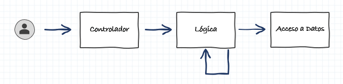

Estructura y Buenas prácticas - Spring Boot
Estructura y funcionamiento
En Springboot no existe nada estandarizado y oficial que hable sobre estructura de proyectos y nomenclatura. Tan solo existen algunas sugerencias y buenas prácticas a la hora de desarrollar que te recomiendo que utilices en la medida de lo posible.
Tip
Piensa que el código fuente que escribes hoy, es como un libro que se leerá durante años. Alguien tendrá que coger tu código y leerlo en unos meses o años para hacer alguna modificación y, como buenos desarrolladores que somos, tenemos la obligación de facilitarle en todo lo posible la comprensión de ese código fuente. Quizá esa persona futura podrías ser tu en unos meses y quedaría muy mal que no entendieras ni tu propio código 
Estructura en capas
Todos los proyectos web que construimos basados en Springboot se caracterizan por estar divididos en tres capas (a menos que utilicemos DDD para desarrollar que entonces existen infinitas capas ).

- Controlador. Es la capa más alta, la que tiene acceso directo con el cliente. En esta capa es donde se exponen las operaciones que queremos publicar y que el cliente puede consumir. Para realizar sus operaciones lo más normal es que realice llamadas a las clases de la capa inmediatamente inferior.
- Lógica. También llamada capa de
Servicios. Es la capa intermedia que da soporte a las operaciones que están expuestas y ejecutan toda la lógica de negocio de la aplicación. Para realizar sus operaciones puede realizar llamadas tanto a otras clases dentro de esta capa, como a clases de la capa inferior. - Acceso a Datos. Como su nombre indica, es la capa que accede a datos. Típicamente es la capa que ejecuta las consultas contra BBDD, pero esto no tiene por qué ser obligadamente así. También entrarían en esa capa aquellas clases que consumen datos externos, por ejemplo de un servidor externo. Las clases de esta capa deben ser nodos
finales, no pueden llamar a ninguna otra clase para ejecutar sus operaciones, ni siquiera de su misma capa.
Estructura de proyecto
En proyectos medianos o grandes, estructurar los directorios del proyecto en base a la estructura anteriormente descrita sería muy complejo, ya que en cada uno de los niveles tendríamos muchas clases. Así que lo normal es diferenciar por ámbito funcional y dentro de cada package realizar la separación en Controlador, Lógica y Acceso a datos.
Tened en cuenta en un mismo ámbito funcional puede tener varios controladores o varios servicios de lógica uno por cada entidad que estemos tratando. Siempre que se pueda, agruparemos entidades que intervengan dentro de una misma funcionalidad.
En nuestro caso del tutorial, tendremos tres ámbitos funcionales Categoría, Autor, y Juego que diferenciaremos cada uno con su propia estructura.
Buenas prácticas
Nomenclatura de las clases
@TODO: En construcción
Accesos entre capas
En base a la división por capas que hemos comentado arriba, y el resto de entidades implicadas, hay una serie de reglas importantísimas que debes seguir muy de cerca:
- Un
Controlador- NO debe contener lógica en su clase. Solo está permitido que ejecute lógica a través de una llamada al objeto de la capa
Lógica. - NO puede ejecutar directamente operaciones de la capa
Acceso a Datos, siempre debe pasar por la capaLógica. - NO debe enviar ni recibir del cliente objetos de tipo
Entity. - Es un buen lugar para realizar las conversiones de datos entre
EntityyDto. - En teoría cada operación debería tener su propio Dto, aunque los podemos reutilizar entre operaciones similares.
- Debemos seguir una coherencia entre todas las URL de las operaciones. Por ejemplo si elegimos
savepara guardar, usemos esa palabra en todas las operaciones que sean de ese tipo. Evitad utilizar diferentes palabrassave,guardar,persistir,actualizarpara la misma acción.
- NO debe contener lógica en su clase. Solo está permitido que ejecute lógica a través de una llamada al objeto de la capa
- Un
Servicio- NO puede llamar a objetos de la la capa
Controlador. - NO puede ejecutar directamente queries contra la BBDD, siempre debe pasar por la capa
Acceso a Datos. - NO debe llamar a
Acceso a Datosque NO sean de su ámbito / competencia. - Si es necesario puede llamar a otros
Serviciospara recuperar cierta información que no sea de su ámbito / competencia. - Debe trabajar en la medida de lo posible con objetos de tipo
Entity. - Es un buen lugar para implementar la lógica de negocio.
- NO puede llamar a objetos de la la capa
- Un
Acceso a Datos- NO puede llamar a ninguna otra capa. Ni
Controlador, niServicios, niAcceso a Datos. - NO debe contener lógica en su clase.
- Esta capa solo debe resolver el dato que se le ha solicitado y devolverlo a la capa de
Servicios.
- NO puede llamar a ninguna otra capa. Ni